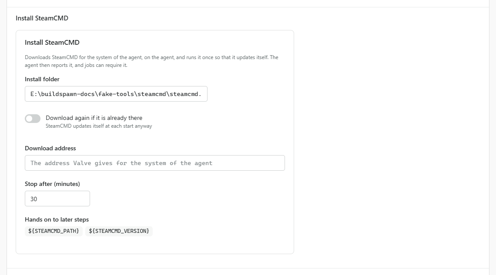

Install SteamCMD
Download Valve's SteamCMD tool onto the agent and run it once so it is ready for the Steam steps.
When to use it
Use it as the first Steam step on agents that are new or short-lived, such as container or cloud agents, or any agent where nobody installed SteamCMD by hand. If SteamCMD is already installed, the step says so and does nothing.
How to set it up
- Open the build configuration and go to Settings › Build steps › Add build step.
- Type
Steamin Filter step types and click Install SteamCMD. - Type a Step name, for example
Install SteamCMD. - Change the fields below only if you need to. The defaults suit most agents.
- Click Save. Drag the step above your Steam upload step.

Every field
| Field | What it does | Default | Example |
|---|---|---|---|
| Install folder | Where SteamCMD goes on the agent. | tools/steamcmd in the folder of the agent | D:\tools\steamcmd |
| Download again if it is already there | Download even when SteamCMD is installed. SteamCMD updates itself at each start anyway. | Off | Off |
| Download address | Where to download the package. Use an internal mirror if your agents sit behind a proxy. | The address Valve gives for the system of the agent | https://mirror.studio.example/steamcmd.zip |
| Stop after (minutes) | Stops the step if it takes longer. | 30 | 30 |
| Hands on to later steps | Shows the two values the step sets: ${STEAMCMD_PATH} and ${STEAMCMD_VERSION}. | Not editable |
The form also has a What happens card. It says the step needs nothing installed, only an internet connection to Valve.
A worked example
Your studio builds on a fresh Windows cloud agent named win-cloud-07. Add Install SteamCMD with the defaults. It installs SteamCMD in tools\steamcmd under the agent folder. Your next step, Steam upload, finds it there without a path.
What you see when it runs
- First run: a line that it is downloading the package to the folder, then that it runs SteamCMD once so it updates itself.
- The step sets
STEAMCMD_PATHandSTEAMCMD_VERSION. Later steps read them as%STEAMCMD_PATH%. - Later runs: SteamCMD is already installed, version … and nothing is downloaded.
Problems and fixes
| Message | What to do |
|---|---|
| The download from … failed | The agent cannot reach Valve. Check its network or proxy, or set Download address to a mirror. |
| The package holds no SteamCMD program | The address is wrong. Use Valve's address for the agent's system. |
| SteamCMD was installed but did not report a version | Run SteamCMD once by hand on the agent to see why. On Linux it often needs 32-bit runtime libraries. |
| SteamCMD ended with the code … | Read the lines above it in the log. |